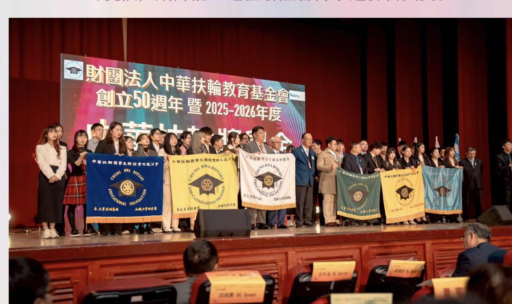

Annual Activities
沿著年度時間軸，把每個月份的活動一頁頁翻開。
這一頁專門整理 2025.06 到 2026.05 的年度活動。 依照交接典禮手冊修正正式名稱與日期後，現在可以直接沿著直線時間軸往下讀，也能點開每個月份看照片、附件與代表畫面。
選圖優先順序
大合照
婉華・詠文
活動代表畫面
手冊人物頁
Timeline Reading
12 Chapters. 1 Rotary Year.
從交接、幹訓、論壇、迎新，到公益與直播主題例會，全部收在同一條年度軸線上，閱讀節奏會比單純相簿更清楚。

2025.06
聯合交接典禮・九份畢旅

2026.01
頒獎典禮
2026.05
直播講座例會
手冊校正
活動正式名稱與日期已優先對齊交接典禮手冊內容。
照片優先序
大合照優先，其次是兩位會長與最能代表活動氣氛的畫面。
手機順讀
沿著單一路徑往下滑就能讀完整年節奏，不需要來回跳轉。
Annual Timeline
用一條直線時間軸，把 25-26 年度一路排開。
所有月份依手冊正式名稱與日期整理，11 月也拆成三個獨立活動區塊，手機和桌機都可以直接順著年度往下閱讀。
手機可左右滑動篩選
Data Reading Rule
資料判讀方式
活動日期與正式名稱已優先依交接典禮手冊修正；若手冊只抓得到月份、沒有明確日期，就先保留月份標示。畫面也以手冊中可確認的人物照片為主，後續若補到同場原始相簿，再優先替換回人物主體一致的版本。